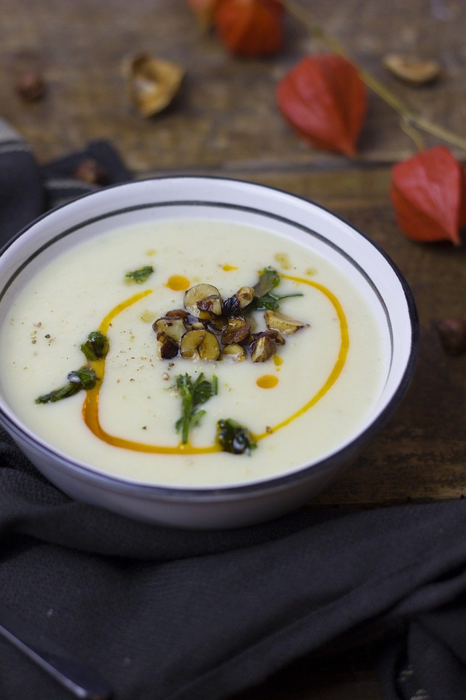

Cauliflower Bacon Soup

Description
A hearty soup, topped with crispy bacon. Perfect for a winter's night or any night, really. Let's pretend the things on the soup in this photo are pieces of bacon because I want to respect copyright, but also I don't feel like searching for another image.
Ingredients
- Olive oil
- Butter
- Chopped cauliflower
- Garlic (crushed)
- Vegetable broth
- Bacon
- Heavy cream
- Cheddar cheese
Steps
- Add the oil into a large pot and melt the butter into it
- Saute the chopped cauliflower and garlic in the pot with the butter and oil until the cauliflower begins to soften
- Add in the vegetable broth, bring the contents of the pot to a boil, then reduce the heat, cover the pot and let it simmer for 30 minutes
- While you let the soup simmer, fry some bacon until it is crispy
- Remove the soup from the pot. Add it to a blender and blend until smooth
- Return the soup to the pot, and turn the stove down to low heat.
- Add in the heavy cream and cheddar cheese and stir
- Serve warm with crumbled bacon on top